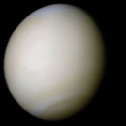
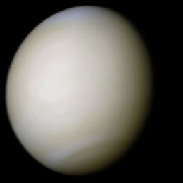

Venus is the second planet in our solar system, which is about 108.2 million km away from the sun, and that's only the second planet! With this much of a distance, it would take Venus about 224.7 Earth days for it to fully orbit all around the sun. Venus's symbol is ♀ and it represents the Roman goddess of love and beauty, which was named to Venus due to its amazing colours. In the solar system, Venus is the third most smallest planet covering 9.2843×1011 km3 in space and weighs around 4.8675×1024 kg, giving the gravitational pull of 8.87 m/s 2, which is really similar to Earth's gravity and you wouldn't notice much difference if you were to stand on Venus. From space Venus is seen as a tint of orange combined with some brown spots which is due to the many volcanoes and amount of magma on Venus. It may seem all orange and brown, but on the Mariner 10, which was one of NASA's space crafts, it took a picture of Venus looking very different than what we thought it would look like. Venus appeared to be a pearl-like white, smooth and shiny. You may think that Mercury is the hottest planet because it’s the closet to the sun and gets most of the heat, but Venus disproves that as it averages 735K. This is due to the many reflective clouds of sulfuric acid that trap the heat in Venus.
 

Wikipedia, The Free Encyclopedia. (September 23, 2016) Venus. Retrieved September 25, 2016, from https://en.wikipedia.org/wiki/Venus
Digital Image: Venus, ~https://upload.wikimedia.org/wikipedia/commons/thumb/8/85/Venus_globe.jpg/230px-Venus_globe.jpg~ Retrieved September 25, 2016.
Digital Image: Venus from Mariner 10, ~https://upload.wikimedia.org/wikipedia/commons/thumb/e/e5/Venus-real_color.jpg/260px-Venus-real_color.jpg~ Retrieved September 25, 2016.